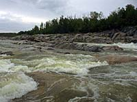
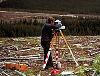
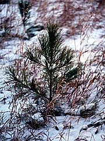
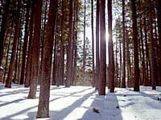
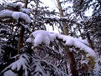
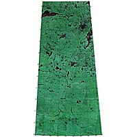
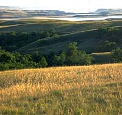

Objectives
Lesson Info
Activities
Advance Preparation
Background Info
Resources
Related Links
Activity #1
Activity #2
Activity #3
- to locate and describe the ecoregions of Saskatchewan
- to relate soil, vegetation and animal species to each ecoregion
- to explain the effect climate and soils have on distribution
of plant and animal species according to their environmental requirements
- to describe land use practices in the ecoregions of Saskatchewan
| Grade Level | 9 | |
| Subject | Science | |
| Curriculum Correlation | Saskatchewan The Environment | |
| CEL's | Independent Learning, Communication | |
| Duration | 2 to 3 hours | |
| Group Size | small groups | |
| Setting | classroom | |
| Vocabulary | distribution, adaptation, range of tolerance, isotherm, topography, frost pocket, mixed transition forest, ecoregion, permafrost. |
- Saskatchewan's Ecological Regions
- Saskatchewan's Ecoregions in Detail
- Presentation of A Saskatchewan Ecoregion
- You need a copy of Saskatchewan's Ecoregions Map
- Choose one of the information sheets on the ecoregions
- Obtain large maps (road maps) of Saskatchewan if possible.
- Have magazines and travel brochures showing scenes and pictures of plants or animals.
Suppose you were picked up by an alien spacecraft, taken for a spin around the planet, then dropped back to earth in the middle of a forest somewhere in Saskatchewan. Could you tell where on earth you were ? The continuous forest and absence of trembling aspen are good clues.
 The presence of birch, spruce and pine provide even more information. These three tree species dominate the forest north of the Churchill River (shown left) in Saskatchewan. |

If, on the other hand, you are surrounded by bur oak, white elm, aspen and green ash, in a small forested area, it's a good guess that you are in southern Saskatchewan, where these trees are common. |
 The fact is, not all forests are alike. Foresters can tell what part of the world they are in from the species of trees alone. Why do forests in different places have different species of trees ? Why are you less likely to find bur oak or green ash near La Ronge ? What trees would you expect to find if you landed in a forest in central Saskatchewan ? |
 The changes in ecosystems can be represented by the changing distribution of trees. Different tree species have different adaptations to environmental conditions. Trees, like all other living things, have a range of tolerance to climate and other environmental factors. Wherever conditions exceed the limits of the tolerance of a particular species, that species will not be found. Two important elements limiting tree growth are temperature and moisture. |

These two factors in combination affect the ability of a tree to draw up water through its roots and give out water vapour through its leaves in the vital process of transpiration. If a tree cannot get enough water or loses too much, it will die. |
 In general, coniferous trees are better able to tolerate long periods of cold, dry conditions, and are found growing farther north where these conditions prevail. |

All the areas that have an average annual temperature of 2 degrees Celcius or less can be shown on a map. This is a line which marks a boundary north of which most of the trees will be coniferous. In this zone, patches of permafrost, permanently frozen soil, occur. |

Topography as well as latitude plays a role in tree distribution. A south-facing slope tends to be warmer than a north-facing slope and may support some species of trees much further north than they are typically found. |
 Low areas or openings in a forest, on the other hand, tend to be cooler than their surroundings and may form frost pockets. These frost pockets deter the growth of typical southern trees, but may allow some northern species to grow far south of their normal range. |

The boundaries that confine a particular type of tree or forest are not obvious. On a drive from Saskatoon to Prince Albert National Park, for example. you will not usually notice any great change in climatic conditions. Somewhere between Saskatoon and the park, however, you will notice scruffy aspen giving way to a true forest with healthy stands of trembling aspen. |

Further along, white spruce appear in the forest. When you reach the park, you will notice a forest dominated by jack pine, spruce or aspen depending upon the topography and successional stage of the area. Where was the boundary ? The answer of course is that no rigid boundary exists in nature. There is only a gradual change of conditions that results in a gradual change in the composition of tree species in the forests. |
 Saskatchewan includes a broad range of climatic conditions and encompasses 11 Ecoregions as outlined on the map Saskatchewan's Ecoregions. An ecoregion is a large area with distinctive ecological responses to climate resulting in certain soil development, vegetation and animal species. In 1994 the province cooperated with Environment Canada and the Canadian Forest Service to standardize ecosystem classification across the country. |
 The warmer, dry climate of southern Saskatchewan produces grassland ecosystems with small pockets of forested lands. Both native and nonnative trees can be found in these small forest communities. Trees grow naturally in riparian areas which are in coulees, along side water courses, hay meadows and springs. |

Afforestation projects produce treed areas in the form of shelterbelts, land reclamation projects or plantings for wildlife. Some of the tree species in these areas are native to Saskatchewan, others are drought hardy hybrids that have been developed, or introduced. |

Some seedlings produced for use in these plantation projects, are started in greenhouses. Others, such as willows and hybrid poplars, are supplied as cuttings. These may or may not be rooted. The cuttings are produced out of doors. Prairie Farm Rehabilitation Authority (PFRA) and Shand Greenhouse supply introduced or exotic and native tree seedlings to be planted in the grasslands. |

Prince Albert Forest Nursery has produced seedlings for southern Provincial parks in addition to the trees it supplies for reforestation in the Provincial forest. Native trees are of course interspersed with introduced or hybrid species in many areas of the grasslands. |
1. Richards, J. H. Atlas of Saskatchewan. University of Saskatchewan, Saskatoon. 1969.
2. Canada and the World - an Atlas Resource. PrenticeHall Canada, Inc. Scarborough, Ontario. 1 994
3. Cypress Hills of Saskatchewan. Kelsey Institute . Media House #V6 186. A 15 minute video of tree and plant life in the Cypress Hills, sponsored by Saskatchewan Education.
4. Hosie, R.C. Native Trees of Canada. Don Mills: Fitzhenry and Whiteside, 1979.
5. The Southern Boreal: Eastern Regions. Kelsey Institute. Media House #V6190. A 15 minute video showing the eastern regions of the southern boreal forest of Saskatchewan.
6. The Southern Boreal Forest. Kelsey Institute. Media House #V5540. An 11 minute video showing the transition from grassland to forest vegetation north of the Saskatchewan River.
- Saskatchewan Education Evergreen Curriculum
- Canadian Forests